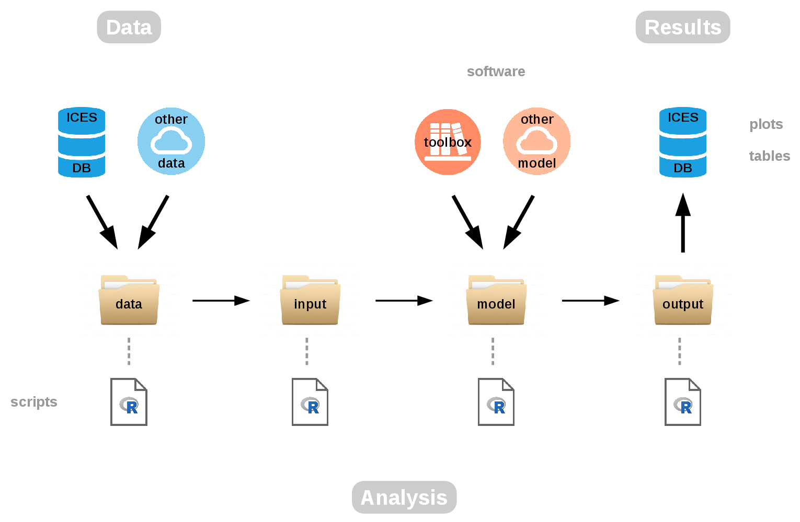

Transparent Assessment Framework
Development page

taf.ices.dk
taf-flyer.pdf
video &
tutorial
Aim
To implement a framework to organize data, methods, and
results used in ICES assessments, so they are easy to find and
rerun later with new data.
System workflow

Each assessment is organized in folders data → input → model →
output.
These folders contain R scripts and other files that perform the following
tasks:
- data
- read fine-resolution data, produce aggregated data in standard CSV format
- input
- read CSV data, produce input data in model-specific format
- model
- run model with input data, produce results in model-specific format
- output
- read results in model-specific format, produce output in standard CSV
format
An assessment in the Transparent Assessment Framework (TAF) is a
broad term used for any analysis for a given stock, using R scripts and the
above folder structure. So TAF assessments can be analytical stock assessments,
data-limited advisory procedures, forecasts, etc.
Development
GitHub repositories
- ices-tools-prod
- software maintained by the ICES Secretariat
- ices-taf
- TAF assessments
Web services:
-
icesDatras
(CRAN)
- trawl survey database
-
icesSAG
(CRAN)
- stock assessment graphs
-
icesSD
- stock database
-
icesVocab
(CRAN)
- reference codes
Other:
-
icesAdvice
(CRAN)
- advisory methods
-
icesTAF
(CRAN)
- support functions
Web interface
Design outline of web user interface
Presentations
2016
- 5 August
- TAF kickoff seminar
(49 slides, with
demo)
- 18 September
- Riga ACOM+SCICOM session
(19 slides)
- 21 September
- Riga open session (23 slides)
- 3 November
-
Web services seminar (17 slides, with
demo)
2017
- 17 March
- DFO webex
(21 slides, with
demo)
- 25 March
- SAG web services (34 slides)
- 1 May
- Assessment WGs (4 slides)
- 22 May
- DIG seminar (21 slides)
- 15 June
- DTU collaboration (14 slides)
- 20 September
- TAF flyer (1 slide, with demo)
- 1 November
- Data Centre (8 slides, with
demo)
- 28 November
- ACOM update (18 slides)
2018
- 24 January
- WGCHAIRS meeting (28 slides)
{kind=link}